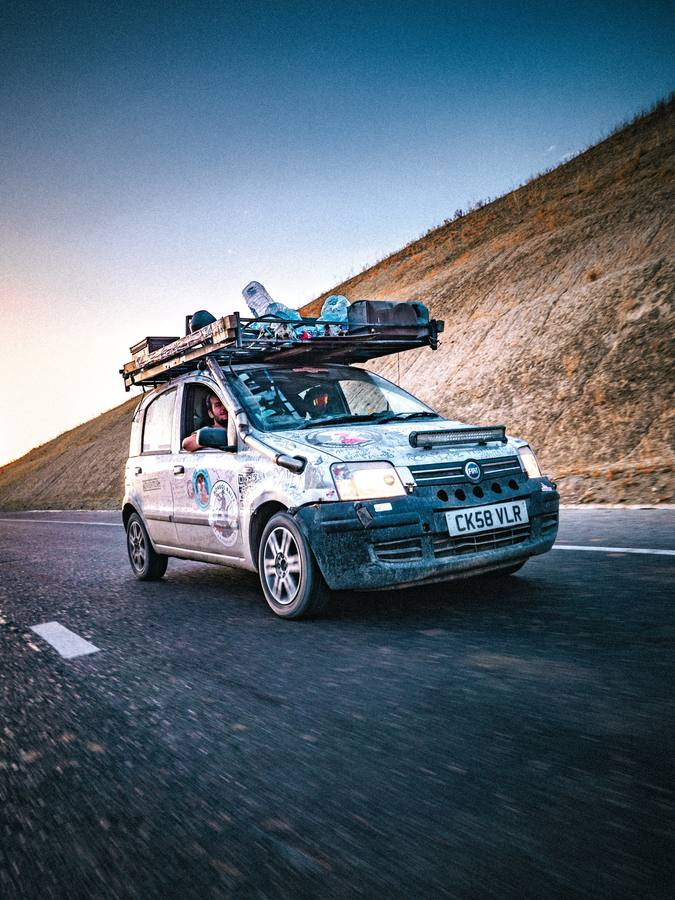
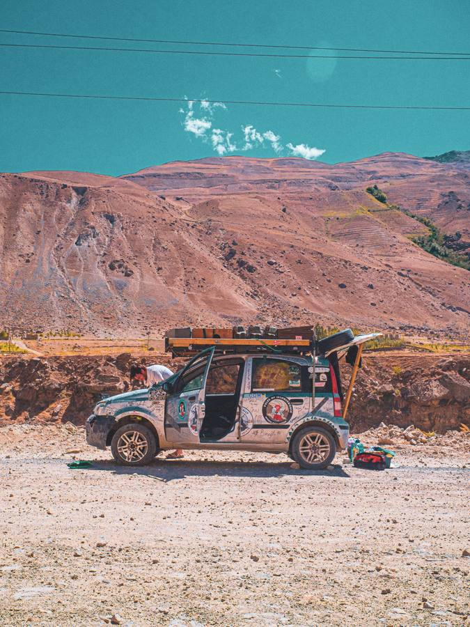
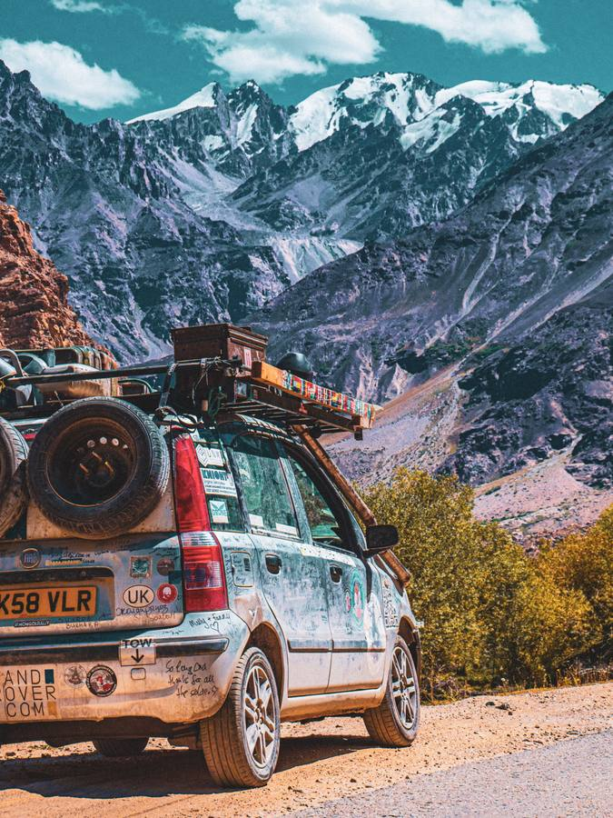
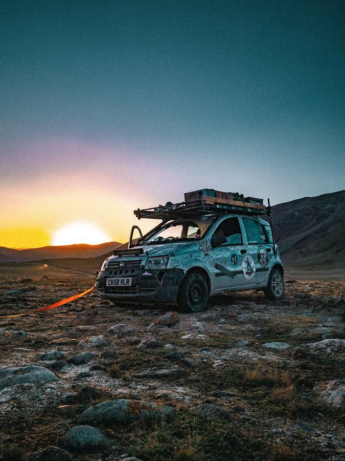

Oxford to Almaty
10,000 km. Two blokes. One 1.2-litre Fiat Panda that very nearly didn't.
2008 · CK58 VLR Kyrgyzstan, 26 Aug 24
Kyrgyzstan, 26 Aug 24
10,000 km. Two blokes. One 1.2-litre Fiat Panda that very nearly didn't.
2008 · CK58 VLR
Kyrgyzstan, 26 Aug 24
I'm Callum Morrison, a robotics engineer from Oxford. Between 2021 and 2024 my mates and I entered the Mongol Rally three times in the same 1.2-litre Fiat Panda: a lap of Britain when COVID shut the borders, a 12,000 km run to Georgia when the war did, and finally, in the summer of 2024, the real thing.
Alberto Guerra Martinuzzi and I drove 10,000 km from England to Almaty. We didn't reach the official finish. The Panda was limping, three spare wheels down, the wiring shredded, and Almaty was as far as it would go. It was enough.
10,000km from England to Kazakhstan. A Mongol Rally 2024 film.






Scroll to drive
In the order the film tells it. The car did its best to stop us and very nearly managed it.
Istanbul. Two lug nuts rattling loose, wheel nearly off.
Everywhere. The oil leak that never stopped. Running rich. The camshaft sensor cable fraying.
Uzbekistan, 6am. Exhaust smashed on an unfinished highway after an all-night drive.
Kazakhstan. No brake pads anywhere in the country. A local mechanic made some work.
Kyrgyzstan. Smashed sump, oil pressure dropping, engine on borrowed time.
Pamir Highway. Lower control arm failed. Welded by a Tajik father who then put us up for the night.
200 km out. Third tyre blows. No spares left. The patched one won't hold air, then the wheel implodes.
18 km out. The wheel leaves the hub at a highway junction. Three lanes blocked. Final flat spare on, walking pace to 0 km.
The war in Ukraine stopped the full rally in 2022, so the finish line moved to Georgia. Still a mighty 12,000 km round trip, and still an expedition of epic proportions.
COVID scuppered the full-fat rally in 2021, so we did the scaled-down version inside the United Kingdom instead. We still managed to make it difficult for ourselves.
Both pages are closed now. Thank you to everyone who chipped in.